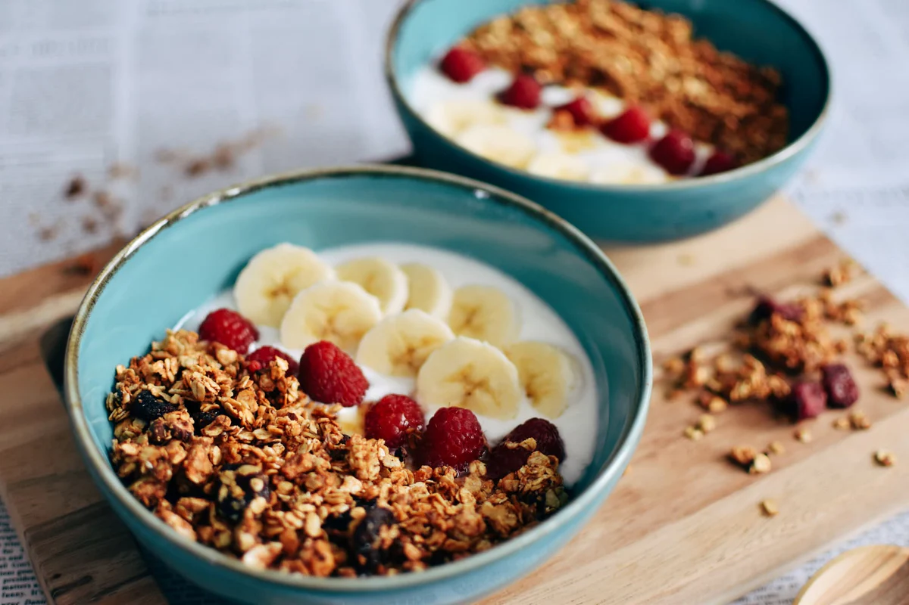

KE Producto Café es una cadena de cafeterías saludables en Buenos Aires que se diferencia de los cafés tradicionales porque ofrece opciones “fit”, como productos keto, sin azúcar y low carb. Además, combina esta propuesta con platos de brunch moderno, como bowls, wraps y smoothies. Tiene varias sucursales y mantiene una imagen “instagrameable”, siendo elegido tanto por personas que cuidan su alimentación como por quienes buscan una experiencia distinta al desayuno clásico.
Leer más →